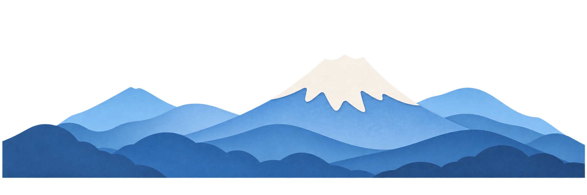
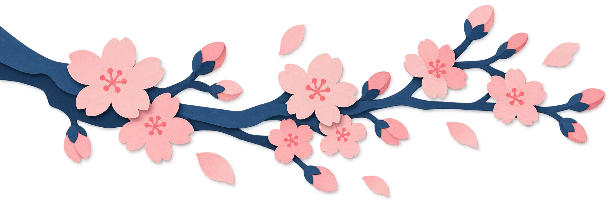

Parallax souris
Déplacez les trois couches selon la position de la souris : plus le pointeur s'éloigne du centre de la fenêtre, plus le soleil, les montagnes et la branche se décalent avec leur propre vitesse.


Déplacez les trois couches selon la position de la souris : plus le pointeur s'éloigne du centre de la fenêtre, plus le soleil, les montagnes et la branche se décalent avec leur propre vitesse.

